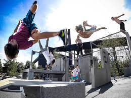
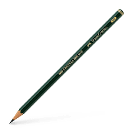
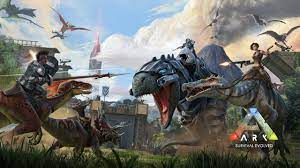
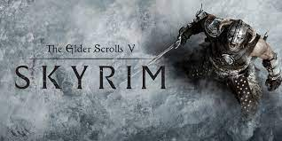

Bienvenue sur le site de Sacha Bellet
Un site fait à l'occasion d'un projet en classe: Ma première page web
Le lieu ou j'étudie :
j'étudie au Lycée Louis Vincent
le lycée situé dans le nouveau quartier du coeur impérial
Et j'y étudie en filière Générale en classe de Première n°3
Les spécialités que j'ai pris cette année en Première et mes moyenne dans ces dernière au premier trimestre sont :
| Mathématique |
Physique-Chimie |
Numérique et Sciences |
| 11,00 |
7,81 |
14,75 |
mes moyenne son loin d'être exelente mais je m'améliorerais au prochain trimestre (enfin j'espère)
Mon Avenir (ce que j'aimerais tout du moins):
Mon objectif est de plus tard travailler dans le art numérique
et les métier qui m'attire dans ce domaine sont:
| concepte artiste |
game artiste |
animateur 2D/3D |
donc faire des étude en animation ou dans la création de jeu vidéo car avec mes spécialité, les étude dans le dessin sont presque inaténiable
Mes loisirs :
Dans la vie j'ai plusieur loisirs et voici les principaux:
Le parkour/Le freerun:
Le parkour est un sport consistant à aller le plus rapidement et le plus efficacement d'un point A à un point B, il peu être résumé comme
l'art du déplacement urbain. Le parkour cherche l'efficacité du le mouvement dans tout type de milieux. Ce sport fut mis en lumière
par le film les wamakasi de Luc Besson
Le freerun quand a lui est une variante du parkour visant l'estétique, de faire de belle figure, transition etc.

ce sont les sport que je pratique en club au Arène à Metz
Le dessin :
un une autre de mes passion/loisir est le dessin, je dessine énormément dans la vie de tout les jour, c'est mon échapatoire,
et cela me permet de me vider la tête.

Les jeux vidéo :
je suis un gros joueur de jeu vidéo, l'avantage c'est que je suis loin d'être difficile et joue a tout type de jeu vidéo
que ce soit les jeu de survie comme minecraft, terraria ou encore ARK

les RPG (Roles Play Games) ou jeu de rôles tel que les jeu Assasin's Creed, les jeu The Legend of Zelda ou encore
The Elder Scrolls 5: Skyrim

Je joue aussi à beaucoup de jeu en ligne compétitif comme League of Legends par exemple
mais mes jeu préférer sont série des jeu Dark Souls (et leur autre jeux de FromSoftwear)

Le dernier film ou la dernière série que j'ai regardé:
la dernière série que j'ai regardé est la série animée "L'attaque des Titans", une série d'animations japonaise avec un thème parfois
dure mais je l'ai adorer

-> Bande d'annonce :
et le dernier film que je suis aller voir au cinéma est le film "Simone" un film autobiographique sur Simone Veil. J'ai beaucoup apprécier ce film
même si il est très dure mais raconte une part importante de l'histoire.
-> Bande d'annonce:
Haut de la page
petit cadeau(césar à la réponse):
kwwsv://brxwx.eh/cO42xPvqsVX